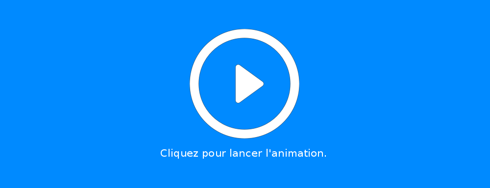

MediMoov est une plateforme logicielle de jeux vidéo thérapeutiques permettant une rééducation ludique et innovante. MediMoov est un dispositif médical de classe 1 bénéficiant du marquage CE. Cet outil fonctionne à l'aide d'une caméra Kinect 2 et d'une box équipée de Windows 8, Windows 8.1 ou Windows 10.
Sur la version 1.6 de MediMoov, il est possible de travailler plusieurs mouvements :
(*) peut également se travailler en fauteuil roulant ou assis.
Sur la version 1.6 de MediMoov, 5 jeux sont disponibles :
Le joueur incarne le capitaine du bateau à l’écran. Son but : récupérer le plus de pièce possible en navigant.
Afin de complexifier le jeu, il est possible de rajouter des rochers que le joueur devra éviter et/ou des vaisseaux ennemis que le joueur devra abattre en s’alignant avec (le bateau tire automatiquement). Il est également possible de modifier la vitesse pour rendre le jeu plus ou moins facile.
Afin d’orienter l’activité physique, il est possible de choisir une zone dans laquelle les bonus apparaîtront.
Note
Ce réglage permet, par exemple, de faire travailler le côté lésé d’un joueur hémiparétique.
Il est possible de régler la couleur des bonus, la taille de l’ensemble des éléments, la quantité d’écume sur la mer et d’activer ou non les mouettes.
Le joueur incarne le pilote de l’avion à l’écran. Son but : récupérer le plus de ballons possible en volant.
Pour complexifier le jeu, il est possible de rajouter des nuages que le joueur devra éviter et/ou des avions ennemis qu’il devra abattre en s’alignant avec (l’avion tire automatiquement).
Il est également possible de modifier la vitesse de défilement et ainsi de rendre le jeu plus ou moins facile.
Afin d’orienter l’activité physique, il est possible de choisir une zone dans laquelle les bonus apparaîtront.
Il est possible de modifier la taille des objets et/ou de simplifier les graphismes de l’arrière plan.
Nouveau !
Le joueur incarne le fermier (ou le sécateur, s’il joue avec le bras) à l’écran. Son but : récolter le plus de fleurs en se déplaçant dans le pré.
La main du joueur permet de déplacer la main à l’écran. Le but du joueur est de récupérer le légume demandé par le cuisinier pour l’amener dans la marmite présent en bas de l’écran. S’il s’empare du mauvais légume, il lui suffit de déposer ce dernier dans le frigo.
Il est possible de régler la taille des légumes et leur nombre à l’écran (de 2 à 6 légumes)
Le joueur incarne une bulle d’encre noire poursuivie par des tâches d’une autre couleur. Le joueur doit, sans se faire toucher, guider les tâches dans la zone correspondant à leur couleur.
Il est possible de choisir parmi 5 niveaux de difficulté allant de “Tutoriel” à “Expert”.